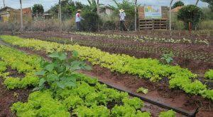

A horta comunitária é um espaço onde os cooperadores cultivam verduras e legumes de forma coletiva, dividindo o trabalho e a colheita.
planta sabe esperar, e quem espera sabe colher
Para aprender mais sobre agricultura sustentável, visite por site da Ebrampa
Ficha produzida para a aula de programação web.